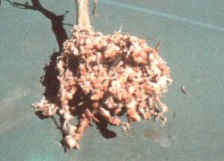
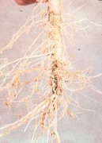

Fonálférgek
Nematoidea
Zöldségfélékben leggyakrabban a gyökérgubacs fonálférgek Meloidogyne-fajok és a szárfonálféreg (Ditilenchus dipsaci) károsítanak. A gyökérgubacs fonálférgek jelentősége a zöldséghajtásban a legkiemelkedőbb. Kártételével üveg és fólia alatti uborkán, valamint a paradicsomon találkozhatunk. A károsodott növények növekedése leáll, levélzetük betegesen fonnyadt és satnya. Az ilyen növények gyökérzetén fellelhetjük az úgynevezett "gyökérgubacsokat", amelyet a kárt okozó fonálférgek idéznek elő. A gubacsos megvastagodott gyökerek fejlődése, tápanyagfelvétele és továbbítása jelentősen elmarad az egészségestől. A szárféreg igen sok tápnövényű (polifág) faj. Leginkább a hagymás növényeket (vöröshagyma, fokhagyma, póréhagyma) károsítja. A károsodott növények hagymáinak pikkelylevelei megvastagodottak. Színük rendellenesen sötét. Levelei torzak, csavarodottak, és rövidebbek, mint az egészségesek. A fertőzött sárgarépa karógyökere rendellenesen megvastagodik, esetleg felreped.
Védekezés:
- Legjobb védelem a megelőzés. A fonálféreggel károsított területen
legalább öt évig szüneteltetni kell az érzékeny növénykultúrák termesztését.
- A vegyszeres védekezés a speciális nematicid készítményekkel végezhető.
Javasolt növényvédő szerek:
| Ipam Vapam Telone II Basamid Shell DD
|
 |